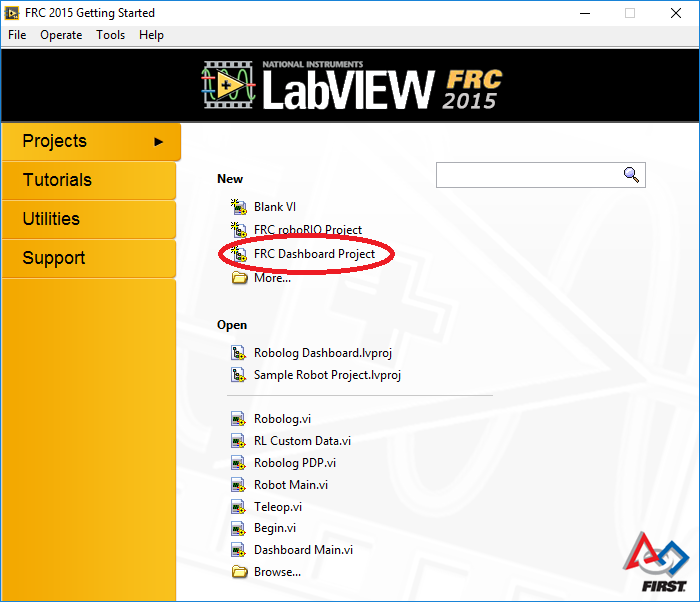
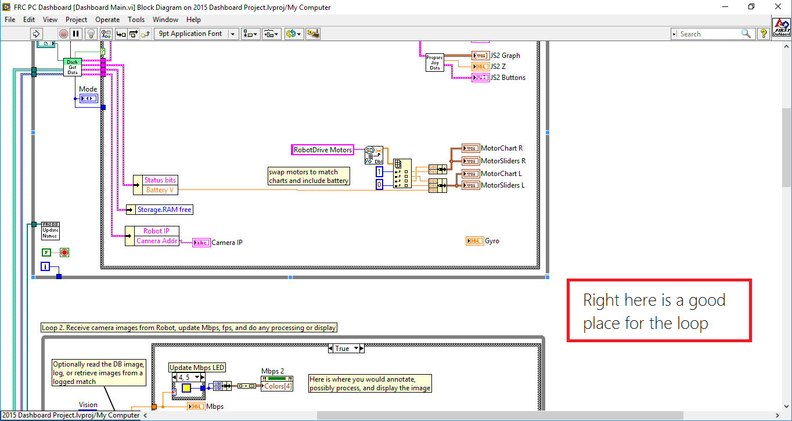
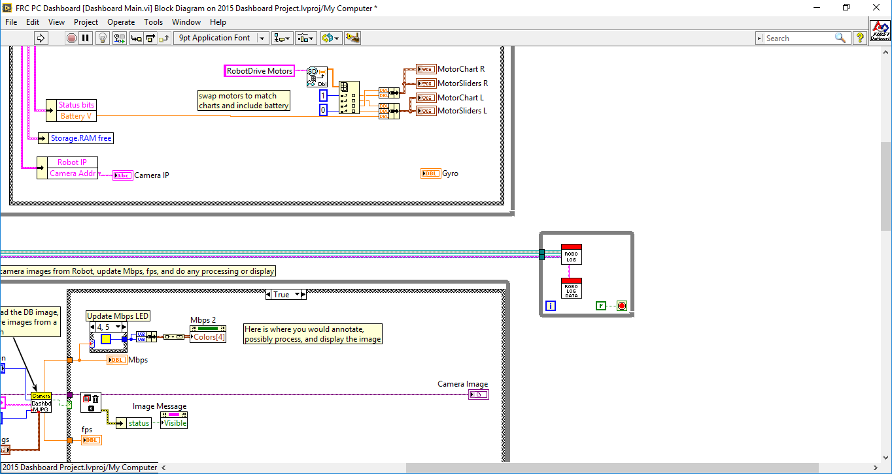

Getting Started
Learn how to easily start using Robolog in your robot.
Download
The main logging system for Robolog is written in LabVIEW and composed of two VI files. These VI files should be installed in your team's Dashboard. Becaause all the logging is done through the dashboard, the VI files are fully compatible with robots coded in C++ or Java, as well as LabVIEW.
Setup
Project Structure
After downloading, create a new FRC Dashboard Project (in LabVIEW). Extract the downloaded zip folder and move the VI files into your project folder.
Your project should look something like this after installing files:
My Computer/
|--Support/
| |--App EXE.ico
| |--Parse Digital Module.vi
| |--Save DB Modules.vi
| |--Receive DS Packet.vi
| |--Decode Status Byte.vi
| |--Panel Resized.vi
| |--Adjust Dashboard Window.vi
|
|--TypeDefs/
| |--DStoPCPacketTypeDef.ctl
|
|--Dashboard Main.vi
|--Robolog.vi
|--RL Custom Data.vi
Loop Setup
Now that you have all of the required files installed, it's time to make them work! Open up "Dashboard Main.vi" and then open up the block diaram (Ctrl E). Next, find a place for the main Robolog while loop (we usually go in between the first two main loops in the dashboard). The main Robolog while loop is where we're going to place our Robolog VI files.
The next thing to do is create a for loop, and set it to always run (by attaching a false constant to the loop's stop function). Then attach the blue and purple outputs from the two "notifier" functions to the loop (the notifiers will be named "Robot IP Update" and "Window Mode"). These two outputs are where all of robolog's data comes from. The next step is to add Robolog and RL Custom Data to the loop, and connect RL Custom Data's output to Robolog's input.
